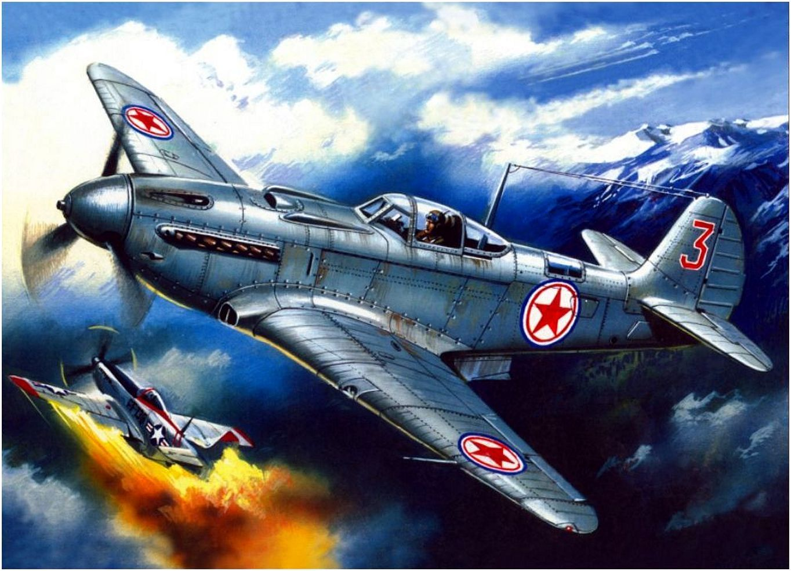

.jpg)

Трагедия Пушкина «Моцарт и Сальери» занимает всего десять страниц. О чем она? О зависти или о том, что «гений и злодейство — две вещи несовместные»? Есть ли оправдание Сальери, который, по версии Пушкина, отравил Моцарта? История предумышленного убийства рассказывается самим преступником: и Моцарта, и все происходящее мы видим глазами Сальери. П
Дебютный сингл jj под названием jj n° 1 вышел в начале 2009 года. Спустя несколько месяцев лейблом Sincerely Yours (англ.)рус., основанном гётеборгской группой The Tough Alliance (англ.)рус., был выпущен дебютный альбом, jj n° 2. Сингл и альбом были оценены на сайте Pitchfork оценками 8 и 8.6 из 10 соответственно[5]. 24 декабря 2009 года группа подписала контракт с американским лейблом Secretly Canadian, и в то же время назначили дату выхода второго полноформатного альбома. Альбом jj n° 3 был выпущен в США и Швеции 9 марта 2010 года[6], а группа, в зависимости от месторасположения, продолжила одновременно работать сразу с двумя звукозаписывающими лейблами — Sincerely Yours и Secretly Canadian. Помимо собственных релизов, коллектив записал несколько кавер-версий, в числе которых оказались «Troublemaker» Эйкона, «Birthday Sex» Джеремайи (англ.)рус. и заглавная песня телесериала Welcome Back, Kotter (англ.)рус.. Все они были бесплатно выпущены в интернете. После выхода второго альбома, марта по апрель 2010 года, jj отправились в турне по США вместе с британской группой The xx[7]. После сотрудничества с The xx, jj отправились в самостоятельный тур, дав несколько концертов в Италии, Франции, Бельгии и других европейских странах[8].
Трагедия Пушкина «Моцарт и Сальери» занимает всего десять страниц. О чем она? О зависти или о том, что «гений и злодейство — две вещи несовместные»? Есть ли оправдание Сальери, который, по версии Пушкина, отравил Моцарта? История предумышленного убийства раСогласно первоначальной структуре музей имел три отдела: отдел, "посвященный специально памяти Императора Александра III", этнографический и художественно-промышленный отдел, художественный отдел. Однако в связи с политическими событиями в стране Памятный отдел был ликвидирован. Сформированный вместо него историко-бытовой отдел в 1934 г. был частично передан Эрмитажу и лег в основу отдела русской культуры этого музея. Этнографический отдел просуществовал в составе Русского музея до 1934 г., после чего он был выделен в самостоятельный Государственный музей этнографии народов СССР. Таким образом, характер музея изменился, и он стал всецело художественным. Экспозиция строится по историко-монографическому принципу, с XI в. до наших дней. Сегодня Русский музей - один из крупнейших музейных комплексов России, куда входят Михайловский дворец (главное здание Русского музея), Мраморный и Строгановский дворцы, Михайловский замок, Летний дворец Петра I и Домик Петра I, а также два садово-парковых комплекса: Михайловский и Летний сады. Русский музей постоянно пополняет свою коллекцию за счет новых приобретений и даров.ссказывается самим преступником: и Моцарта, и все происходящее мы видим глазами Сальери. П
Трагедия Пушкина «Моцарт и Сальери» занимает всего десять страниц. О чем она? О зависти или о том, что «гений и злодейство — две вещи несовместные»? Есть ли оправдание Сальери, который, по версии Пушкина, отравил Моцарта? История предумышленного убийства рассказывается самим преступником: и Моцарта, и все происходящее мы видим глазами Сальери. П
Трагедия Пушкина «Моцарт и Сальери» занимает всего десять страниц. О чем она? О зависти или о том, что «гений и злодейство — две вещи несовместные»? Есть ли оправдание Сальери, который, по версии Пушкина, отравил Моцарта? История предумышленного убийства рассказывается самим преступником: и Моцарта, и все происходящее мы видим глазами Сальери. П
Трагедия Пушкина «Моцарт и Сальери» занимает всего десять страниц. О чем она? О зависти или о том, что «гений и злодейство — две вещи несовместные»? Есть ли оправдание Сальери, который, по версии Пушкина, отравил Моцарта? Государственный Русский музей - один из крупнейших мировых музеев и, пожалуй, единственный в стране, где в таком полном объеме представлены сокровища отечественной культуры. Это не только живопись, графика, скульптура, но и произведения декоративно-прикладного искусства. Сегодня собрание музея насчитывает около 400 тысяч экспонатов. Впервые двери Русского музея были открыты для посетителей 7 марта 1898 г., через три года после того, как 13 апреля 1895 г. вышел специальный указ Николая II об учреждении Русского музея императора Александра III. Тем же указом для размещения картин и скульптуры русской школы отводилось одно из красивейших зданий Петербурга - Михайловский дворец, сооруженный в 1825 г. знаменитым архитектором Карлом Росси для великого князя Михаила Павловича - сына императора Павла I. С целью переоборудования дворца был объявлен конкурс, который выиграл молодой архитектор Василий Свиньин. Перед ним стояла сложная задача превратить покои, предназначенные для частной жизни, в залы общественного назначения, удобные для показа картин и произведений. Одновременно с перестройкой и реставрацией дворцовых залов формировалась коллекция музея, основой которой стали произведения, переданные из музея Академии художеств, Эрмитажа, загородных царских резиденций и крупных частных коллекций. П